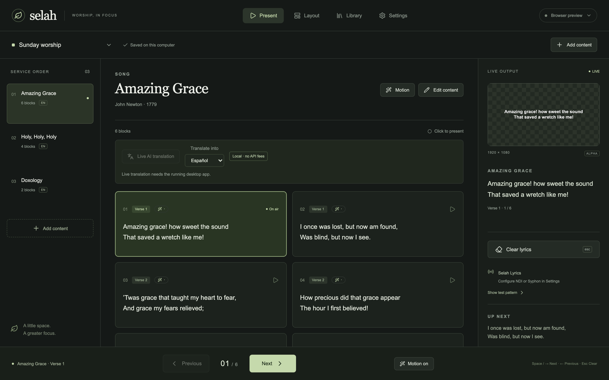
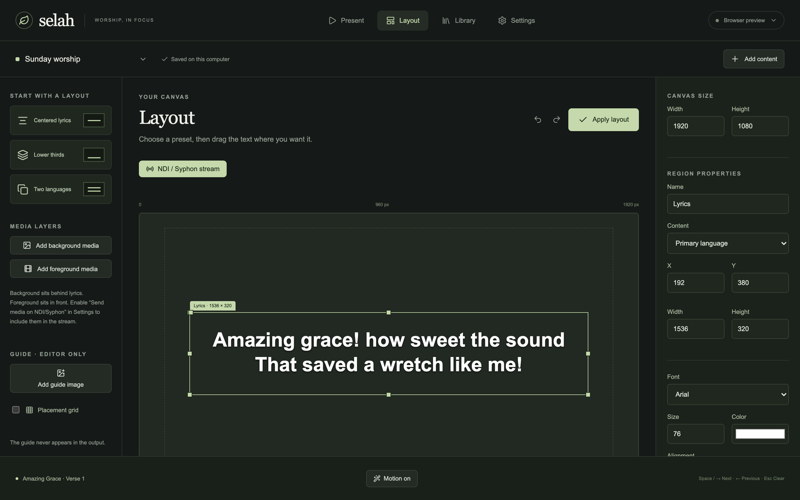
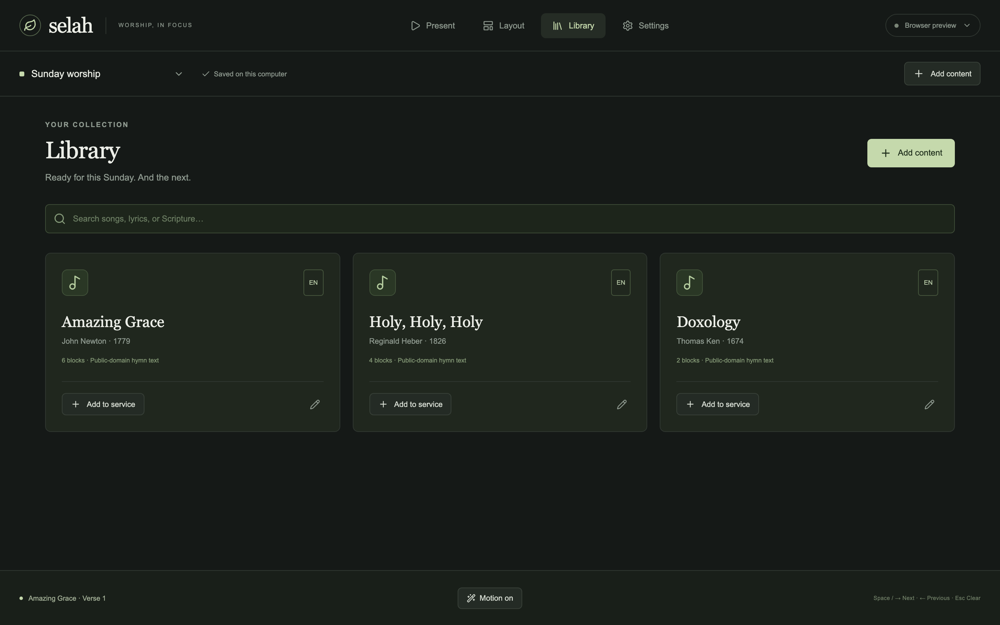

Selah
Worship lyrics, in focus.
Prepare songs and Scripture, lay out bilingual text, place background and foreground media, then send transparent lyrics to ProPresenter — or run Selah alone.
See the app
Real screenshots from Selah — Present, Layout, Settings, and Library.





Built for Sunday mornings
One operator surface. Clear live output. Media when you want it.
- Present with confidence Click a block to go live. Arrows and Space advance; Escape clears.
- Layouts that fit the room Centered, lower-third, or bilingual regions with drag handles.
- Background & foreground media Images or video behind or in front of lyrics, with audio device selection.
- Scripture ready Built-in WEB and Reina-Valera 1909, plus importable translations.
- Local-first AI Organize lyric lines on this computer without rewriting the words.
- Show control Map MIDI buttons, receive OSC commands, and follow MTC or LTC timecode with timeline cues.
- Your fonts Import TTF or OTF fonts in Layout for your lyric designs.
- Volunteer friendly A short PDF guide ships in the DMG for first-time operators.
Your first service, step by step
Install Selah, prepare your content, then put a lyric block on air. You can present without AI or an external controller.
- Install on your Mac. Download the DMG below, open it, and drag Selah into Applications. The volunteer guide PDF is included beside the app.
- Open Selah. This release is unsigned. If macOS blocks the first launch, try opening it once, then go to System Settings → Privacy & Security → Open Anyway and confirm. Follow any restrictions set by your organization.
- Build your service. Choose Add content to select a saved song, paste lyrics, import OpenLyrics, or load Scripture. Put the songs in service order.
- Choose the look. In Layout, choose centered, lower-third, or bilingual text. Add background or foreground media, or use Import .ttf / .otf for a custom font. Apply the layout before presenting.
- Go live. In Present, select a song and click a lyric block. Use Previous/Next, arrow keys, or Space to navigate. Escape clears the lyrics.
- Connect your output. Configure your screen in Display, or start NDI/Syphon in Settings → Output and select the Selah feed in your receiver. Keep “Send media on NDI/Syphon” off for transparent lyrics.
- Save a portable copy. Use Service options → Export. When using imported fonts, copy the fonts/ folder alongside the exported service.
Set up MIDI, OSC, and timeline cues
In Settings → MIDI, enable MIDI, choose an input, and use Learn beside a command to capture your controller button. In Settings → OSC, enable OSC and choose the UDP port (9000 by default). Send /selah/next, /selah/prev, or /selah/clear from your controller.
In Present → Timeline, put a block on air, position the playhead, and choose Tap set-cue · current block. Choose Play for the internal clock with external chase off. To follow external timecode, select MTC or LTC and the matching FPS in Settings → Timecode & chase. LTC uses the default audio input’s first channel and may request microphone permission. With pause-on-manual enabled, manual navigation pauses chase; choose Re-sync to resume.
These controls require the desktop controller. Test your hardware, timecode source, and output receiver before a service.
Use local AI and live translation
In Settings, choose Set up local AI to download the local model (about 2.5 GB; internet needed for setup). In Present, enable Live AI translation, select a language, and present a song. Original lyrics stay visible while translation runs. Local AI works offline after setup; 16 GB RAM is recommended.
Works with ProPresenter
Selah publishes an NDI or Syphon lyric feed. Leave media off the stream for transparent lyrics your switcher composites — or bake media into the feed for a standalone look.
- Start NDI or Syphon in Selah Settings
- Add the Selah feed as an input in ProPresenter
- Keep “Send media on NDI/Syphon” off for alpha lyrics
Download Selah
Selah 0.2.0 · Apple Silicon (M1 or newer) · macOS 12 or later. This release is unsigned and not notarized.
The DMG includes the app and volunteer guide. Windows and Intel Mac installers are not included in this release.
Requires the NDI runtime for network video and Syphon.framework for same-Mac Syphon. Signing and notarization come in a later release.